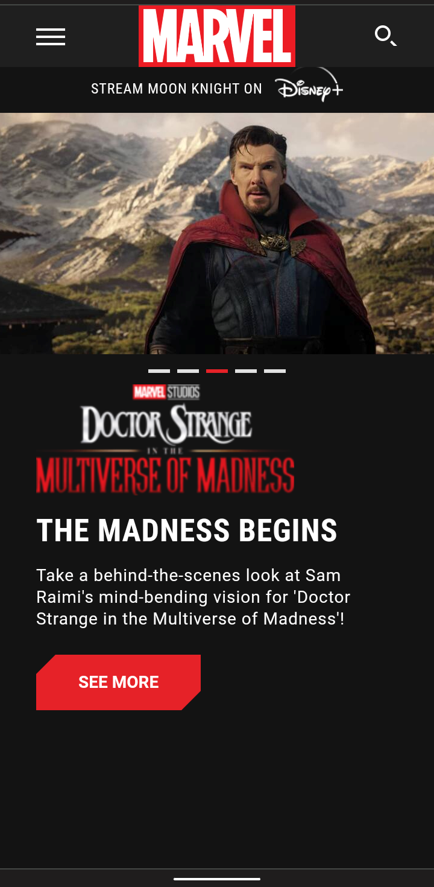
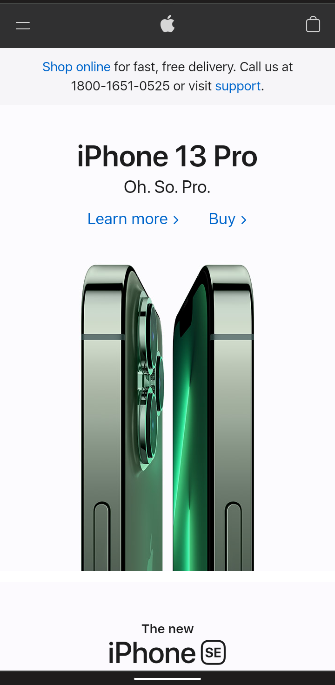
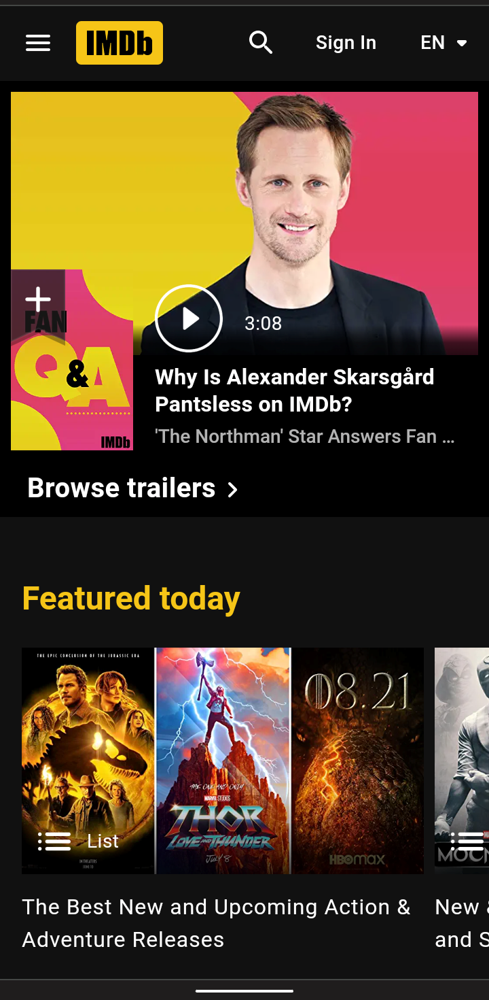

Visual Hierarchy
Marvel
marvel.comThis is a both perfect and simple exemple of Visual Hierarchy. Marvel have a lot of content in their catalog. But their new productions and investments need more views than the older ones. So the new, fresh, hot or "headline content" has a great and large place of view for the user click and watch.
PARC: Repetition
APPLE STORE
Applestore.comWhat can I say? How many times the name Iphone can be read less then one second the page has loaded??Iphone is their flagship and are emphasized through all the page. And not only the last Iphone but as the last models too.
Hick's Law
IMDB
imdb.comIMDB contains a lot of content so Hick's Law it's being used not just on Menus but also be using on the main. On the top a slide show with hot content and other few yellow options that can include all the page can provides even having a lot of content avaiable and daily publishing.